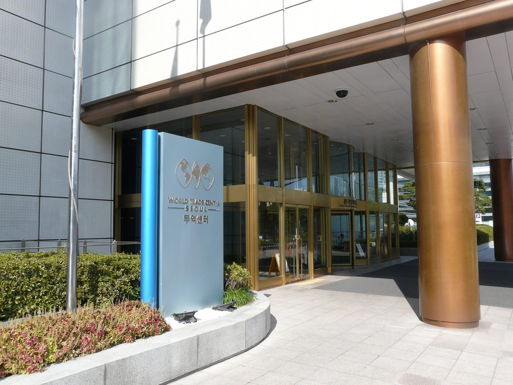

첫 법정 재생에너지의 날, 태양광 사업자들 지역별 도매가격제 반대 시위

서울 코엑스 기념식장과 나주 전력거래소 LMP 설명회장에서 도입 유예·재검토와 기후부 장관 사퇴 요구…송전망 부족 책임을 발전사에 떠넘긴다는 주장, LNG·석탄 민간 발전업계도 우려
10월 23일이 법정기념일로 지정된 뒤 처음 열린 정부 주최 재생에너지의 날 기념식에 맞춰, 태양광 발전사업자들이 정부의 지역별 전력도매가격제(LMP) 추진에 반대하는 시위를 벌였다. 대한태양광발전사업자협회·전국태양광발전협회 등은 23일 기념식이 열린 서울 코엑스와, 전력거래소가 22~23일 사업자 설명회를 연 전남 나주 한국에너지공대 대강당에서 LMP 도입 유예와 재검토, 김성환 기후에너지환경부 장관의 사퇴를 요구했다. LMP는 송전망 사정에 따라 지역마다 계통한계가격(SMP)을 달리 매기는 제도로, 전기를 수도권으로 충분히 보내지 못하는 비수도권에서는 도매가격이 낮아질 수 있다. 사업자들은 자신들이 손쓸 수 없는 송전망 부족의 손실을 발전사가 떠안게 된다며, 송전제약의 책임은 "역대 정부와 한전 등이 분담해야 할 몫"이라고 주장했다. 지역에서 발전소를 돌리는 LNG·석탄 민간 발전업계도 수익성 악화와 제도 불확실성을 문제 삼고 있다. 정부는 지난 20일 각종 기념일 등에 관한 규정을 고쳐 매년 10월 23일을 재생에너지의 날 법정기념일로 정했다.
시민에너지 관점
첫 법정 재생에너지의 날에 정작 재생에너지를 만드는 사업자들이 거리로 나섰다는 것은, 송전망이 늦어진 부담을 누가 질지에 대한 사회적 합의 없이 가격 제도부터 바뀌고 있다는 신호로 보인다. 지역별 가격 신호가 발전소를 수요지 가까이 옮기는 데 필요하다는 반론도 있지만, 이미 지어진 소규모 발전소는 자리를 옮길 수 없고 망 건설 지연은 그들의 책임이 아니다. 오히려 지역 주민과 협동조합이 소유한 발전소가 그 지역의 산단·주민 수요와 직접 이어진다면, 낮아진 지역 가격은 손실이 아니라 지역 전기요금과 산업 경쟁력의 이익으로 돌아올 수 있다. 정부는 기존 소규모 사업자를 위한 경과 보호 장치와 함께, 지역 소유 발전소가 지역 수요에 직접 전기를 팔 수 있는 길부터 LMP 설계에 담아야 한다.
출처: 에너지경제신문 2026-10-23 이원희 원문 보기
初の法定再生可能エネルギーの日、太陽光事業者が地域別卸売価格制に反対デモ
ソウルCOEXの記念式会場と羅州の電力取引所LMP説明会会場で導入猶予・再検討と気候部長官の辞任を要求…送電網不足の責任を発電事業者に押し付けると主張、LNG・石炭の民間発電業界も懸念
10月23日が法定記念日に指定されてから初めて政府主催で開かれた「再生可能エネルギーの日」記念式に合わせ、太陽光発電事業者が政府の地域別電力卸売価格制（LMP）の推進に反対するデモを行った。大韓太陽光発電事業者協会や全国太陽光発電協会などは23日、記念式が開かれたソウルのCOEXと、電力取引所が22～23日に事業者説明会を開いた全羅南道羅州の韓国エネルギー工科大学の大講堂で、LMP導入の猶予と再検討、金星煥（キム・ソンファン）気候エネルギー環境部長官の辞任を求めた。LMPは送電網の状況に応じて地域ごとに系統限界価格（SMP）を変える制度で、電気を首都圏へ十分に送れない非首都圏では卸売価格が下がる可能性がある。事業者側は、自分たちではどうにもできない送電網不足の損失を発電事業者が背負うことになるとして、送電制約の責任は「歴代政府と韓国電力などが分担すべきもの」だと主張した。地方で発電所を運営するLNG・石炭の民間発電業界も、収益性の悪化と制度の不確実性を問題視している。政府は20日、各種記念日等に関する規定を改正し、毎年10月23日を再生可能エネルギーの日として法定記念日に定めた。
市民エネルギーの視点
初の法定「再生可能エネルギーの日」に、再生可能エネルギーをつくる当の事業者が街頭に出たことは、送電網の遅れの負担を誰が負うかについて社会的な合意がないまま、価格制度から先に変わろうとしている兆しとみられる。地域別の価格シグナルは発電所を需要地の近くへ誘導するために必要だという反論もあるが、すでに建てられた小規模発電所は場所を移せず、送電網建設の遅れは彼らの責任ではない。むしろ地域住民や協同組合が所有する発電所がその地域の産業団地や住民の需要と直接つながれば、下がった地域価格は損失ではなく、地域の電気料金と産業競争力の利益として戻ってくる可能性がある。政府は既存の小規模事業者のための経過措置とともに、地域所有の発電所が地域の需要に直接電気を売れる道をまずLMPの設計に盛り込むべきだ。
出典: エネルギー経済新聞 2026-10-23 Lee Won-hee 原文を読む
韩国首个法定可再生能源日，太阳能发电商抗议分区批发电价制度
在首尔COEX纪念仪式现场和罗州电力交易所LMP说明会现场要求暂缓并重新审视引入、气候部部长辞职…称把输电网不足的责任转嫁给发电商，LNG和煤电民营发电行业也表示担忧
在10月23日被定为法定纪念日后由政府首次主办的可再生能源日纪念仪式之际，韩国太阳能发电商举行抗议，反对政府推进分区电力批发电价制度（LMP）。大韩太阳能发电事业者协会、全国太阳能发电协会等团体23日在举行纪念仪式的首尔COEX，以及电力交易所22日至23日举办发电商说明会的全罗南道罗州韩国能源工科大学礼堂，要求暂缓并重新审视LMP，并要求气候能源环境部部长Kim Sung-hwan辞职。LMP是根据输电网状况对不同地区适用不同系统边际价格（SMP）的制度，在电力无法充分输往首都圈的非首都圈地区，批发电价可能走低。发电商认为，他们无法掌控的输电网不足所造成的损失将由发电商承担，并主张输电受限的责任"应由历届政府和韩国电力公社等分担"。在地方运营电厂的LNG和煤电民营发电行业也对盈利恶化和制度的不确定性提出质疑。政府于20日修改了《各类纪念日等相关规定》，将每年10月23日定为可再生能源日法定纪念日。
市民能源视角
在首个法定可再生能源日，生产可再生能源的发电商反而走上街头，这似乎表明，在输电网建设滞后的负担由谁承担尚无社会共识的情况下，价格制度就先行改变了。也有人反驳说，分区价格信号是引导电站靠近需求地所必需的，但已经建成的小型电站无法搬迁，输电网建设的拖延也不是它们的责任。相反，如果由当地居民和合作社拥有的电站能与当地产业园区和居民的用电需求直接相连，走低的地区电价就不是损失，而可能转化为当地电费和产业竞争力上的收益。政府应在为既有小型发电商设置过渡保护措施的同时，首先在LMP设计中为地方所有的电站开辟直接向本地需求售电的渠道。
来源: 能源经济新闻 2026-10-23 Lee Won-hee 查看原文
On Korea's first statutory Renewable Energy Day, solar operators protest locational wholesale pricing
At the COEX ceremony in Seoul and a power exchange LMP briefing in Naju, they demanded a delay and review of the scheme and the climate minister's resignation, saying grid shortfalls are being pinned on generators; private LNG and coal generators are also worried
Solar power operators staged protests against the government's plan for locational marginal pricing (LMP) in the wholesale power market as the first government-hosted Renewable Energy Day ceremony was held since October 23 became a statutory day of observance. The Korea Solar Power Producers Association, the National Solar Power Association and other groups demanded on October 23 that LMP be postponed and reconsidered and that Climate, Energy and Environment Minister Kim Sung-hwan resign, protesting at COEX in Seoul, where the ceremony took place, and at the auditorium of the Korea Institute of Energy Technology in Naju, South Jeolla Province, where the Korea Power Exchange held a briefing for operators on October 22 and 23. LMP sets different system marginal prices (SMP) by region according to grid conditions, so wholesale prices could fall outside the Seoul metropolitan area, where power cannot be sent north in sufficient volume. The operators said generators would bear losses from a transmission shortfall they cannot control, arguing that responsibility for grid constraints "should be shared by successive governments and KEPCO." Private LNG and coal generators running plants in the regions are also raising concerns about weaker profitability and regulatory uncertainty. The government amended its regulation on commemorative days on October 20 to make October 23 Renewable Energy Day every year.
Citizen Energy View
That the very people who produce renewable power took to the streets on the first statutory Renewable Energy Day appears to signal that the pricing rules are changing before society has agreed on who should bear the cost of delayed grid construction. Some argue that locational price signals are needed to steer power plants closer to demand, but small plants that are already built cannot move, and delays in building the grid are not their fault. If, instead, plants owned by local residents and cooperatives were connected directly to demand from nearby industrial parks and households, lower regional prices could come back as savings on local power bills and gains in industrial competitiveness rather than as losses. Alongside transitional protection for existing small operators, the government should first build into the LMP design a way for locally owned plants to sell power directly to local demand.
Source: Energy Economic News 2026-10-23 Lee Won-hee Read the original